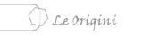

|  | |
 |
|
 |
|
| Marco Montanari | |
La vera origine dell'Intelligenza Artificiale è però databile solo a partire dal XX secolo. Tutto ha infatti origine dalle opere di Von Neumann, Gödel e Turing.
Von Neumann fu sicuramente una delle menti più fervide del XX
secolo, e influì non poco sull'incredibile concentrazione di menti
geniali che si trovavano negli Stati Uniti dopo la promugazione delle
leggi razziali nell'Europa nazi-fascista.
Il suo contributo non è solo da ascrivere alla matematica o alla
fisica, ma fu il fondatore delle moderne scienze informatiche. Infatti
insieme a Oppenheimer sviluppa la "teoria degli automi",
dà origine alla teoria dei giochi, collabora con l'università
della Pennsylvania per la costruzione di ENIAC, ma, soprttutto, crea la
prima ufficiale architettura di un computer.
Dimostro' che una macchina con un'architettura binaria
(l'attuale computer) poteva eseguire qualunque calcolo risolubile. Da
allora l'architettura (o modello) dei computer e' rimasta la stessa.
Come già detto, non è solo per l'architettura informatica
che Neumann deve essere ricordato dall'IA. Il suo contributo in quest'ambito
deriva dal fatto che partendo dalle teorie di Turing analizzò e
costruì la macchina ideata dal matematico inglese, ma se ne discosta
da un punto di vista filosofico. Sosotiene infatti che la macchina non
può essere paragonata alla mente umana.
Infatti, nel suo testo "teoria degli automi", afferma
la sostanziale e inconciliabile differenza fra una macchina e la mente
umana: "Sembra così che il sistema nervoso usi un sistema
di notazioni completamente diverso da quelli usati abitualmente in
aritmetica e matematica;", e ancora, sul linguaggio, la "bestia
nera" dell'IA: "Nel trattare più a fondo questo problema
si entra necessariamente in problemi di linguaggio. Abbiamo già
rilevato che il sistema nervoso si fonda su due tipi di comunicazione:
quella che non richiede formalismi aritmetici e quella che li richiede,
cioè comunicazioni di istruzioni (le comunicazioni logiche)
e comunicazioni di numeri (quelle aritmetiche). Le prime possono essere
viste più propriamente come linguaggio, le seconde come matematica.".
Tutto questo mostra quanto approfondita fosse l'analisi di Von Neumann riguardo all'IA, e il motivo per cui ancor oggi i suoi articoli vengano usati come testi di riferimento per lo studio dell'Intelligenza Artificiale.
L'altro grande "padre" dell'intelligenza Artificiale, Kurt
Gödel, intrattenne con Von Neumann strette relazioni.
Il suo contributo in quest'ambito delle scienze cognitive consiste in
approfonditi studi di logica e linguistica. Le varie teorie e leggi che
ora portano il suo nome ne sono la dimostrazione.
Uno di questi teoremi pone però molti dubbi sulla realizzabilità dell'IA. Il teorema dice:
Per ogni sistema formale coerente F che si proponga di decidere - cioè dimostrare o rifiutare - tutte le asserzioni dell'aritmetica, esiste una proposizione aritmetica che non può essere nè dimostrata nè confutata all'interno del sistema stesso. Quindi il sistema F è incompleto.
Questo teorema, pubblicato in risposta ai 29 quesiti di Hilbert, che miravano ad una formalizzazione completa della matematica, sostiene in pratica che non si può dimostrare ogni affermazione all'interno di un sistema di regole. Questo può essere visto, come è stato spesso fatto, come limite per lo studio dell'IA, oppure come vantaggio.
Fra i pricipali detrattori dell'IA a partire dal teorema di Godel si trova Roger Penrose (sì, proprio quello del triangolo impossibile e della scala infinita), che recentemente ha pubblicato un ennesimo testo per dimostrare l'irrealizzabilità dell'IA.
In posizione diametralmente opposta rispetto a Penrose si trova Ray, che a partire dalla dimostrazione di Godel e di una sua risposta alla domanda se il suo teorema fosse una barriera insormontabile per l'IA, nel 1990 fa partire il programma tierra. La risposta di Godel alla già citata domanda fu che in pratica probabilmente si sarebbe potuta creare una mente artificiale, ma non progettandola dal nulla, ma come risultato di un processo evolutivo. E se comunque si riuscisse a creare questa IA, noi non riusciremmo a capirne il funzionamento.
| Da "teoria degli automi" |
||
Bisogna rendersi conto che il linguaggio è in gran parte un fatto storico. I linguaggi umani fondamentali ci sono stati trasmessi in varie forme, ma la loro molteplicità prova soltanto che non vi è, in essi, niente di assoluto e necessario. Come il greco e il sanscrito sono soltanto dei fenomeni storici e non delle assolute necessità logiche, così è del tutto ragionevole supporre che la logica e la matematica siano delle forme di espressione storiche, accidentali. Esse possono avere delle varianti essenziali, cioè possono esistere in forme diverse da quelle a cui siamo abituati. Senza dubbio, la natura del sistema nervoso centrale e dei sistemi di messaggi che esso trasmette indica in modo positivo che le cose stanno così. Abbiamo ormai raccolto abbastanza prove per capire che qualunque sia il sistema usato dal linguaggio nervoso, esso è caratterizzato da una profondità logica e aritmetica inferiore a quella a cui siamo normalmente avvezzi. Eccone un esempio: la retina dell’occhio umano effettua una notevole riorganizzazione dell’immagine visiva percepita dall’occhio. Ora questa riorganizzazione viene effettuata nella retina o, più precisamente, al punto di entrata del nervo ottico, per mezzo di solo tre sinapsi successive, cioè per mezzo di tre successivi passi logici. Il carattere statistico del sistema di messaggi usato nelle operazioni aritmetiche del sistema nervoso e il suo basso grado di precisione indicano che la perdita di precisione già descritta non può accentuarsi di molto nel sistema di messaggi usato. Esistono dunque qui delle strutture logiche differenti da quelle usate nella logica e nella matematica. |
||
- Artificial Intelligence
- La definizione nasce nel 1956 durante un seminario interdisciplinare
nel New Hampshire. Tale simposio partiva dall'affermazione che si potesse
simulare "ogni aspetto dell'apprendimento oppure ogni altra caratteristica
dell'intelligenza"
- John von Neumann
- John von Neumann nacque ebreo ed ungherese a Budapest il 28 dicembre
1903 come Janos Neumann, e morì cattolico e statunitense a Washington
l'8 febbraio 1957 con il nome con cui tutti lo conoscono (l'ereditario
`von´ venne assegnato nel 1913 a suo padre per meriti economici
dall'imperatore Francesco Giuseppe). La sua conversione al cattolicesimo
avvenne in occasione del (primo) matrimonio nel 1930, con la figlia
di una fervente cattolica. Di fronte al Senato statunitense descrisse
la sua ideologia come "violentemente anticomunista, e molto più
militarista della norma". La sua morte precoce fu l'effetto di
un contrappasso, dovuto ad un cancro alle ossa contratto per l'esposizione
alle radiazioni dei test atomici di Bikini nel 1946, la cui sicurezza
per gli osservatori egli aveva tenacemente difeso.
Von Neumann fu un bambino prodigio: a sei anni conversava con il padre in greco antico; a otto conosceva l'analisi; a dieci aveva letto un'intera enciclopedia storica; quando vedeva la madre assorta le chiedeva che cosa stesse calcolando; in bagno si portava due libri, per paura di finire di leggerne uno prima di aver terminato. Da studente, frequentò contemporaneamente le università di Budapest e Berlino, e l'ETH di Zurigo: a ventitré anni era laureato in ingegneria chimica, ed aveva un dottorato in matematica.
La ricerca scientifica fu una parte fondamentale della sua vita. Infatti diede eccezionali contributi in campi come Logica, Meccanica Quantistica, Economia, Applicazioni militari di teorie e scoperte scientifiche e Informatica. Non fu estraneo alla politica: fu lui a gestire tutto l'aspetto scientifico della guerra fredda.
- Architettura Binaria
- La struttura di una macchina binaria è costituita da:
L'Unita' Aritmetica Centrale, un componente che si occupi dei calcoli -operazioni logiche- (ALU)
L'Unita di Controllo che gestisce un numero finito di istruzioni in memoria e di dati (DATAPATH)
La Memoria che contenga dati e istruzioni (REGISTRI e RAM)
La Memoria Volatile (oggi diremmo la RAM) e' una delle innovazioni introdotte dal modello V.N.
L'Unita' di Ingresso e di Uscita (I/O, monitor, tastiera e la memoria di massa, ecc..).
Nel 1946 all'Institute of Advanced Study (Princeton - USA) introdusse il concetto dell'elaborazione a programma immagazzinato, cioe' della macchina di uso generale che di volta in volta svolge un lavoro diverso in relazione alla sequenza di istruzioni immagazzinata in memoria.
- Kurt Gödel
- Nasce a Brno, in Cecoslovacchia, nel 1906, Professore dal 1933 al
1938 presso la facoltà di matematica dell'Università di
Vienna, successivamente presso l'Institut of Advanced Studies di Princeton,
è considerato una delle figure più grandi della storia
della logica. Nella prima fase della sua ricerca, Gödel è
ricordato per due fondamentali proposizioni metodologiche: la dimostrazione
semantica del calcolo dei predicati nel 1930, e l'anno successivo del
"teorema di incompletezza di Gödel", secondo il quale
è impossibile dimostrare la non contraddittorietà di un
sistema logico-matematico avvalendosi del linguaggio proprio del sistema
preso in esame. Emigrato negli Stati Uniti, dove ottiene la cittadinanza
nel 1948, continua gli studi logico-matematici ampliando la nozione
di aritmetica finitista. Tra le sue opere principali: Sulle proposizioni
formalmente indecidibili dei Principia Mathematica e dei sistemi affini
(1931) e "La Consistenza dell'ipotesi del continuo"
(1940). Muore a Princeton nel 1978
L'importanza di Gödel nella matematica moderna deriva sicuramente dal Teorema di Incompletezza di Godel"Per ogni sistema formale di regole ed assiomi è possibile arrivare a proposizioni indecidibili, usando gli assiomi dello stesso sistema formale"
Questo postulava la inconoscibilità dell’universo, demoliva la fede nell’assolutismo razionalistico su cui avevo basato praticamente tutta la mia scala di valori: un razionalismo positivista incentrato sulla certezza che un’accurata osservazione potesse penetrare nel midollo del cosmo fino a comprenderne l’essenza strutturale e, soprattutto, sulla certezza assoluta che nulla fosse inconoscibile e tale da sfuggire alla comprensione dell’uomo.
Ma cosa significa indecidibile?Se si prende, ad esempio una proposizione come
Questa proposizione è falsa
e la si analizza, si ottengono strane cose: Se la proposizione fosse vera, sarebbe vero che è falsa, il che significa che deve essere vera.
Se al contrario la proposizione fosse falsa, dovrebbe essere vera, o per lo meno non-falsa.
Il dubbio fondamentale nasce dalla domanda: esiste un sistema in cui la proposizione non sia indecidibile? - Alan Turing
- Nacque a Paddington, un quartiere di Londra, nel 1912 da una famiglia
agiata. Venne però ben presto lasciato alle cure di amici di
famiglia mentre i genitori erano tornati in India (il padre era militare
di stanza in India).
La scuola fu per Alan un periodo estremamente difficile, in quanto veniva scarsamente stimolato, ed era interessato a cose molto più complesse di quanto potessero sapere i suoi professori.
Arrivato comunque bene o male alla fine del periodo scolastico di base, l'università fu più leggera, anche perchè Cambrdige pullulava di personaggi straordinari come Turing.
La sua capacità matematica, logica e comunque intellettuale lo portarono ad essere chiamato nel gruppo di Blechley Park, e, in seguito a ricevere svariate onorificenze.
Tutto questo non bastò però ad evitargli ciò che avrebbe poi portato alla sua morte: la condanna per atti osceni dovuta alla sua omosessualità.
Alan Turing morì suicida nel 1954 all'età di quarantadue anni, dopo aver mangiato una mela intinta nel cianuro. -